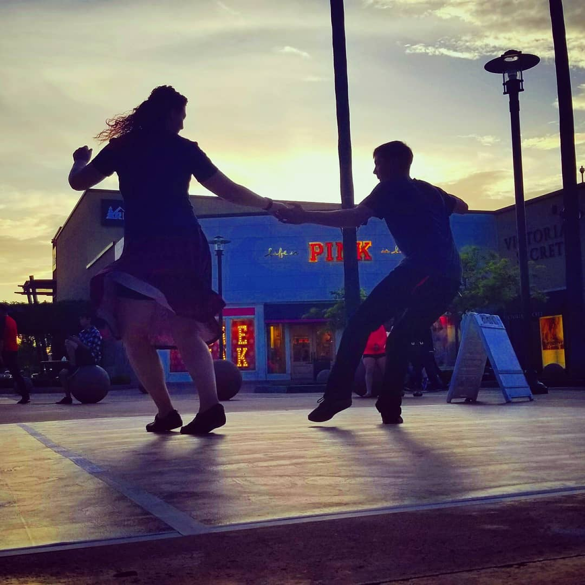
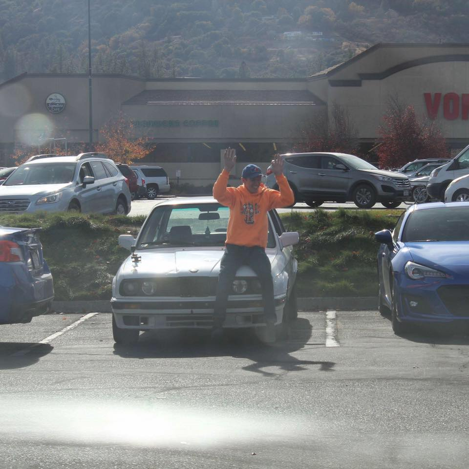
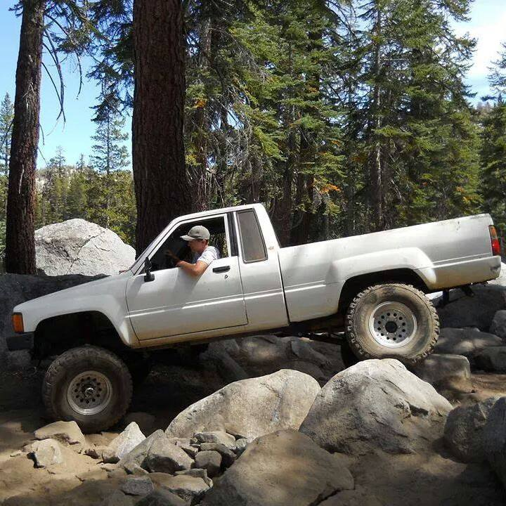

<about-me>
 About Me Abridged, Abridged:
In general I find myself hard to describe. I have a burning desire to do… kind of everything? I’ve always enjoyed problem solving and making things, no matter how good I am at the thing. Computers and cars have always been my biggest interests, but I’ve never stopped branching out. I love dancing, I’m particularly okay at Lindy Hop Swing. Video games will always have a place in my heart, but I will never be the best at them. Drones are a big hobby that I hardly find time to do, but I can keep up. I am a machinist by trade, and aspiring coder. I love making stuff.
I’ll have to come up with something better at some point
